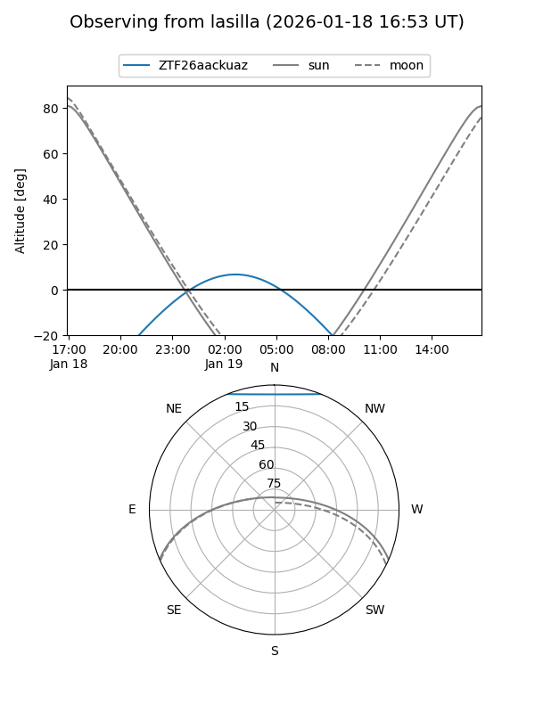
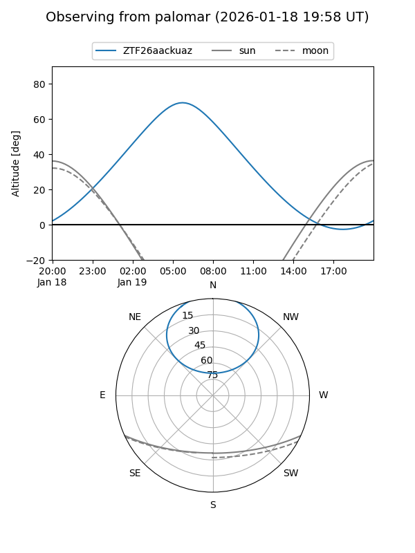

ZTF26aackuaz
Target ZTF26aackuaz at 2026-01-21 05:16
Aliases and brokers:
FINK: link
Lasair: link
ALeRCE: link
alt names
ZTF26aackuaz (ztf,fink_ztf)
Coordinates:
equatorial (ra, dec) = 86.9627,+53.99803
equatorial (HMS+DMS) = 05:47:51.06,+53:59:52.90
galactic (l, b) = (158.4031,+13.03800)
Flags:
Photometry:
last ztfr=20.42
1 ztfr detections
Lightcurve

Visibility


Additional plots